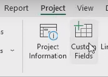
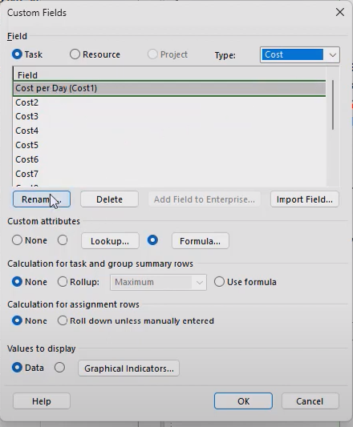
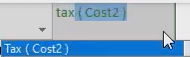

🎯 Eesmärk: Lisada kohandatud arvutusväli (Custom Field) Microsoft Projectis valemite abil.
Kohandatud välja avamine
Minge vahekaardile Project ja valige Custom Fields.

Välja tüübi valimine
Valige välja tüüp (nt Cost) ja klõpsake Rename, et anda väljale nimi.

Valemi sisestamine
Klõpsake Formula... ja sisestage soovitud valem, näiteks: [Actual Cost]

Välja lisamine vaatesse
Paremklõpsake veeru päisel, valige Insert Column ja leidke oma kohandatud väli.

Arvutusväli tabelis
Arvutusväli kuvatakse nüüd tabelis automaatselt arvutatud väärtustega iga ülesande jaoks.